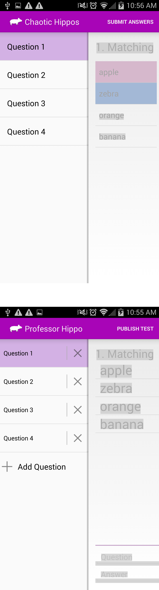

Introduction
Professor Hippo is an Android App that will allow a professor to create an test with various questions and then upload it to a server. Students will then be able to download the test to their Android smartphone and complete it. After completing the downloaded test, students will upload their answers to the server. The professor can download the results and view the data in a variety of graphs and compiled statistics.
Test Setup
When the user enters the app, he/she will be prompted to select Student or Professor. The user will see different screens based upon which screen is chosen. The user can then choose a question to complete or change, and if you are a professor you can create additional questions. The process is shown below.
Question Types
There are four different types of questions that the proffesors can create and students will complete. These include:
Matching
Once the matching question has been created, a professor can enter a question at the top. The professor can insert matches by typing in the left and right side of a match at the bottom of the screen and pressing '+'. Newly created matches will appear in a list on the screen. The professor can press and hold a match to bring up an action mode which will allow the deletion of matches by selecting matches and pressing 'Delete'.
The matching question gets displayed to the student in two lists. The student can select a match from the left side, which will highlight it to be a specific color, then select a match that the student believes goes with the left one and it will highlight the same color. The student only needs to highlight all the pairs to complete the question.
Fill In The Blank
The professor can enter a question at the top of the fill in the blank question. Inside the question, the professor can enter blanks by pressing the 'Insert Blank' below the question text box. Pressing this will dynamically put an image inside the question with a number corresponding to how many blanks are present. Deleting and adding blanks will renumber the blanks if necessary. Whenever a blank is inserted, an answer box for that blank is created at the bottom of the screen. The professor will type in the correct answer for each blank that is created.
The student will complete the fill in the blank aswer by typing into all the blanks that are present at the bottom of the screen. If a student does not complete all the answers, the question will appear red on the question list.
True/False
The True/False question is the easisest question for the professor to create. The professor will type in the question at the top of the screen and will select either True or False as the correct answer to the question. When students are completing the question, they only need to select either True or False to answer the question.
Multiple Choice
The professor can start creating a Multiple Choice Question by filling in the question text at the top of the screen. At the bottom of the screen, the professor can create new possible answers by typing into the Answer box and pressing the 'Add' button. This will dynamically add new answer choices to the screen in the correct corresponding order. The professor can select which answer is the correct answer by pressing and holding on an answer choice then choosing 'Answer' on the action mode (bar at the top of the screen). To delete answers, the professor can press and hold answer choices then select multiple to delete. Once all your choices are selected, the professor can press 'Delete' on the action mode and those choices will be removed from the screen.
The student will only need to select which answer is the correct answer on the screen. This is done the same way as the professor, by pressing and holding an answer choice and selecting 'Answer' on the action mode.
Graphs
Student scores for each question will be displayed in a pie chart and the overall score for the students will be displayed in a bar graph.
Contact Us
Having any questions about the project? Feel free to contact:
| AJ Kause | akausejr@umich.edu |
| Sebastian Martinez | sebdmart@umich.edu |
| Nick Augustyniak | naugust@umich.edu |
| David Rushdoony | doony@umich.edu |